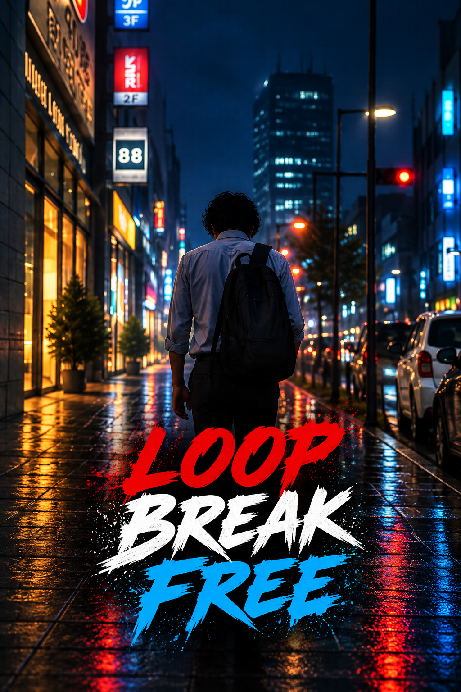

LOOP - BREAK - FREE
A SHORT FILM ABOUT CHOOSING YOUR OWN LIFE
Ram is an introvert who has spent his life following decisions made by others. His strict teacher father steers him into IT, where colleagues take advantage of his inability to say no. When senior colleague Harsha returns after a stroke and explains why he is finally leaving the loop to pursue his own dreams, Ram begins to question the life he has accepted. He reaches his breaking point, chooses freedom, and starts a new path as a wildlife photographer.

Breaking the loop.
Ram begins to question the life he has accepted, reaches his breaking point, chooses freedom, and starts a new path as a wildlife photographer.
From the screen.
Watch the completed 5-minute short film below. There is no separate trailer.
If the Drive player does not load, watch the short film on Google Drive ↗
Read the screenplay.
Open the screenplay in Google Drive. Access depends on the file owner's sharing settings.
OPEN SCREENPLAY ↗Making the idea work.
The short-film assignment required 3–5 minutes of footage within an 8-hour call sheet. The shoot was completed in about 10 hours on a single day with a compact kit and planned locations.
Solving the sound.
The cafeteria scene had strong AC-fan noise in the boom recording. Noise reduction helped, and the edit reinforced the need to check sound continuity and connected transitions throughout the scene.
What worked. What I learned.
The production taught me to review transitions across whole sequences, scout sound environments before confirming locations, and prepare alternate locations.
Plan the shoot
Use the call sheet, kit and locations to make realistic decisions before production.
Protect the sound
Scout noisy environments and listen for tone changes between takes.
Review transitions
Check continuity across connected clips and the full scene.